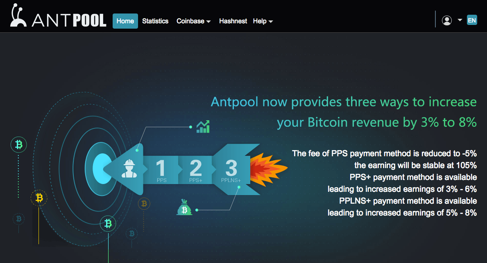

Despite recent controversy, Antpool remains the largest Bitcoin mining pool in terms of its Bitcoin network hash rate. Antpool holds roughly 15% of the total hash rate of all Bitcoin mining pools.

Antpool mined its first block in March 2014, meaning that it emerged roughly four years after the first mining pool; Slushpool.
Antpool is run by Bitmain Technologies Ltd., the world’s largest Bitcoin mining hardware manufacturer, and a large portion of their pool is run on Bitmain’s own mining rigs.
Antpool supports p2pool and stratum mining modes with nodes that are spread all over the world to ensure stability (US, Germany, China etc.).
Also, Antpool’s user interface is surprisingly slick considering that the underlying company thrives mostly off of hardware sales.
The pool is free to join and the process is simple.
First, you need to acquire Bitcoin mining hardware. Then you need to download mining software.
Hardware is important because it determines the size of your contribution to the pool’s hash rate. Software is important because it enables you to direct your hardware’s hash power towards the pool you prefer. So make sure to make the right choice in order to optimize your rewards.
Finally, sign up at ( http://antpool.com ) antpool.com to get started.
Antpool claims that it does not charge any fees for using its pool. Although there is some truth to this claim, it is not 100% correct.
While Antpool does not directly charge fees, it also does not disclose the Bitcoin transaction fees that are collected. Basically, clients are left in the dark. Currently, every Bitcoin block has a 12.5 BTC reward which Antpool does share with you when it finds a block.
Lately, however, Bitcoin transaction fees have been rising and an additional 1-2 bitcoins are collected per block by pools. At this time, Antpool keeps 1-2 bitcoins form transaction fees for itself, which are not shared with miners who have hash power pointed toward the pool.
It can be argued that these rates prevent the service from being usable for small-time and big-volume users. Consequently, some users on bitcointalk.org heed that the undisclosed fees make the service unwise to use for the time being.
The pool does not appear to have a payout threshold and pays out every day around 10 AM UTC.
The minimum withdrawal amount is 0.0005 BTC (other sources say 0.001 BTC).
Solo mining means you mine for bitcoins without joining a pool. So if you use Antpool you are not solo mining by default.
Generally, you will receive more frequent payouts by joining a pool.
Antpool has refused to enable arguably beneficial upgrades to Bitcoin for reasons based on claims that have been largely disproved. Notably, this has taken place with somewhat of a vindictive attitude.
More specifically, the controversy revolves around Segwit – a feature that requires miner activation to be enabled. Despite the fact that most Bitcoin users want this feature activated, Antpool, among other pools, appears to be blocking this feature.
Antpool began signaling for Bitcoin Unlimited in early March 2017 for reasons that have not been elucidated by Bitmain CEO (and cofounder Jihan Wu).
Antpool claims that it will only signal for Segwit if there is a hardfork, which is a proposition that most users oppose. Furthermore, allegations that the owner refuses to sell hardware to Segwit supporters have also begun to circulate.
By using Antpool, you allow the pool to decide your hardware’s approach to these matters, meaning that the pool that you used dictates the type of Bitcoin protocol that your hardware employs. If you wish to decide which implementation your hardware should signal for, you can use a pool that leaves the choice to its users, like the Slush mining pool.